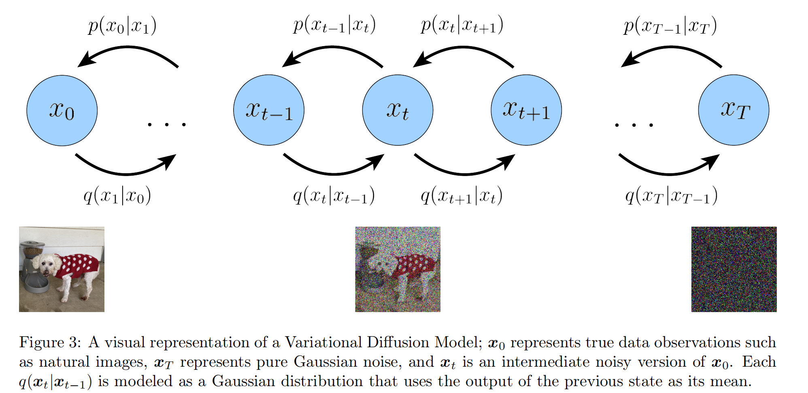

全文翻译
引言：生成模型
给定来自目标分布的观测样本$x$，生成模型的目标是学习对其真实数据分布$p(x)$进行建模。一旦完成学习，我们就可以根据需要从近似模型中生成新样本。此外，在某些公式中，我们还可以使用所学模型来评估观测数据或生成数据的似然性。
当前文献中有几个著名的研究方向，我们将仅在较高层次上简要介绍。生成对抗网络（GANs）对复杂分布的采样过程进行建模，这种建模是通过对抗方式学习的。另一类生成模型被称为“基于似然的”，旨在学习一个为观测数据样本分配高似然的模型。这包括自回归模型、归一化流和变分自编码器（VAEs）。另一种类似的方法是基于能量的建模，其中分布被学习为一个任意灵活的能量函数，然后进行归一化。
分数生成模型与之高度相关；它们不是直接学习对能量函数本身进行建模，而是通过神经网络学习基于能量模型的分数。在本文中，我们将探讨并回顾扩散模型，正如我们将展示的那样，扩散模型同时具有基于似然和基于分数的解释。我们将极其详细地展示这些模型背后的数学原理，旨在让任何人都能理解扩散模型是什么以及它们的工作原理。
背景：证据下界、变分自编码器和分层变分自编码器
对于许多模态，我们可以认为所观察到的数据是由一个相关的不可见潜在变量表示或生成的，我们用随机变量$z$来表示这个潜在变量。表达这一概念的最佳直观方式是通过柏拉图的洞穴寓言。在这个寓言中，一群人一生都被锁在洞穴里，只能看到投射在他们面前墙壁上的二维影子，这些影子是由在火前经过的不可见三维物体产生的。对于这些人来说，他们所观察到的一切实际上是由他们永远无法看到的更高维抽象概念所决定的。
类似地，我们在现实世界中遇到的物体也可能是由一些更高级的表示生成的；例如，这些表示可以封装颜色、大小、形状等抽象属性。那么，我们所观察到的可以被解释为这些抽象概念的三维投影或实例化，就像洞穴里的人所观察到的实际上是三维物体的二维投影一样。虽然洞穴里的人永远无法看到（甚至完全理解）隐藏的物体，但他们仍然可以对其进行推理和推断；同样，我们可以近似描述所观察数据的潜在表示。
柏拉图的洞穴寓言说明了潜在变量作为决定观察结果的潜在不可观察表示的概念，但这个类比的一个局限性是，在生成建模中，我们通常寻求学习低维潜在表示，而不是高维表示。这是因为在没有强先验的情况下，尝试学习比观察结果维度更高的表示是徒劳的。另一方面，学习低维潜在表示也可以被视为一种压缩形式，并且有可能揭示描述观察结果的语义有意义的结构。
证据下界
从数学角度来看，我们可以将潜在变量和观察到的数据想象为由联合分布$p(x,z)$建模。回想一下，生成建模的一种方法，即 “基于似然” 的方法，是学习一个模型来最大化所有观察到的$x$的似然$p(x)$。我们有两种方法可以处理这个联合分布，以得到纯粹观察数据的似然$p(x)$：我们可以明确地对潜在变量$z$进行边缘化：
或者，我们也可以利用概率的链式法则：
直接计算并最大化似然$p(x)$是困难的，因为这要么涉及在公式（1）中对所有潜在变量$z$进行积分，对于复杂模型来说这是难以处理的；要么在公式（2）中需要访问真实的潜在编码器$p(z|x)$。然而，利用这两个公式，我们可以推导出一个称为证据下界（ELBO）的项，正如其名称所示，它是证据的下界。在这种情况下，证据被量化为观察数据的对数似然。因此，最大化ELBO成为优化潜在变量模型的替代目标；在理想情况下，当ELBO被强大地参数化并完美优化时，它与证据完全等价。正式地，ELBO的公式为：
为了明确与证据的关系，我们可以用数学公式表示为：
这里，$q_{\phi}(z|x)$是一个灵活的近似变分分布，其参数为$\phi$，我们试图对其进行优化。直观地说，它可以被认为是一个可参数化的模型，用于估计给定观察值x时潜在变量的真实分布；换句话说，它试图逼近真实后验分布$p(z|x)$。正如我们在探索变分自编码器时将会看到的，通过调整参数$\phi$来最大化ELBO，从而提高下界，我们能够获得可用于对真实数据分布进行建模并从中采样的组件，进而学习一个生成模型。现在，让我们更深入地探究为什么ELBO是我们想要最大化的目标。
让我们从推导ELBO开始，使用公式（1）：
在这个推导中，我们通过应用詹森不等式直接得到了下界。然而，这并没有为我们提供太多关于底层实际情况的有用信息；关键的是，这个证明没有直观地解释为什么ELBO实际上是证据的下界，因为詹森不等式只是一笔带过。此外，仅仅知道ELBO确实是数据的下界，并不能真正告诉我们为什么要将其作为目标进行最大化。为了更好地理解证据和ELBO之间的关系，让我们进行另一种推导，这次使用公式（2）：
从这个推导中，我们从公式（15）清楚地观察到，证据等于ELBO加上近似后验分布$q_{\phi}(z|x)$和真实后验分布$p(z|x)$之间的KL散度。事实上，在第一次推导的公式（8）中，正是这个KL散度项被詹森不等式神奇地消除了。理解这个项不仅是理解ELBO和证据之间关系的关键，也是理解为什么优化ELBO是一个合适目标的关键。
首先，我们现在知道为什么ELBO确实是一个下界：证据和ELBO之间的差异是一个严格非负的KL项，因此ELBO的值永远不会超过证据。
| 图1：变分自编码器的图形表示。这里，编码器$q(z\mid x)$为观察值x定义了潜在变量z的分布，$p(x\mid z)$将潜在变量解码为观察值 |
其次，我们探究为什么要最大化ELBO。在引入了我们想要建模的潜在变量z之后，我们的目标是学习描述观察数据的潜在结构。换句话说，我们希望优化变分后验分布$q_{\phi}(z|x)$的参数，使其与真实后验分布$p(z|x)$完全匹配，这可以通过最小化它们的KL散度（理想情况下为零）来实现。不幸的是，直接最小化这个KL散度项是难以处理的，因为我们无法访问真实的$p(z|x)$分布。然而，请注意，在公式（15）的左侧，数据的似然（因此我们的证据项$\log p(x)$）相对于$\phi$始终是一个常数，因为它是通过对联合分布$p(x,z)$中的所有潜在变量z进行边缘化计算得到的，与$\phi$无关。由于ELBO和KL散度项的和是一个常数，任何相对于$\phi$对ELBO项的最大化必然会导致对KL散度项的等量最小化。因此，最大化ELBO可以作为学习如何完美建模真实潜在后验分布的替代方法；我们对ELBO的优化越多，我们的近似后验分布就越接近真实后验分布。此外，一旦训练完成，ELBO也可以用于估计观察到的数据或生成数据的似然，因为它是为了逼近模型证据$\log p(x)$而学习的。
变分自编码器
在变分自编码器（VAE）的默认公式中，我们直接最大化ELBO。这种方法是变分的，因为我们在由$\phi$参数化的一系列潜在后验分布中优化出最佳的$q_{\phi}(z|x)$。它被称为自编码器，是因为它让人联想到传统的自编码器模型，在该模型中，输入数据经过中间瓶颈表示步骤后被训练来预测自身。为了更清楚地说明这种联系，让我们进一步剖析ELBO项：
在这种情况下，我们学习一个中间瓶颈分布$q_{\phi}(z|x)$，它可以被视为一个编码器；它将输入转换为潜在变量的分布。同时，我们学习一个确定性函数$p_{\theta}(x|z)$，将给定的潜在向量z转换为观察值x，这可以被解释为一个解码器。
公式（19）中的两项都有直观的解释：第一项衡量解码器从我们的变分分布中重构的似然性；这确保了学习到的分布正在对有效的潜在变量进行建模，以便可以从这些潜在变量中再生原始数据。第二项衡量学习到的变分分布与对潜在变量的先验信念的相似程度。最小化这项鼓励编码器实际学习一个分布，而不是坍缩为狄拉克δ函数。因此，最大化ELBO相当于最大化其第一项并最小化其第二项。
VAE的一个显著特点是如何联合优化参数$\phi$和$\theta$来最大化ELBO。VAE的编码器通常被选择为对具有对角协方差的多元高斯分布进行建模，而先验通常被选择为标准多元高斯分布：
然后，ELBO的KL散度项可以通过解析计算，重构项可以使用蒙特卡罗估计进行近似。我们的目标可以重写为：
其中，潜在变量$\{z^{(l)}\}_{l = 1}^{L}$是从$q_{\phi}(z|x)$中采样得到的，对于数据集中的每个观察值x都是如此。然而，在这个默认设置中出现了一个问题：我们计算损失所依据的每个$z^{(l)}$都是通过随机采样过程生成的，而这个过程通常是不可微的。幸运的是，当$q_{\phi}(z|x)$被设计为对某些分布进行建模时，包括多元高斯分布，可以通过重参数化技巧来解决这个问题。
重参数化技巧将一个随机变量重写为一个噪声变量的确定性函数；这允许通过梯度下降来优化非随机项。例如，从均值为$\mu$、方差为$\sigma^{2}$的正态分布$x \sim N(x;\mu,\sigma^{2})$中采样可以重写为：
换句话说，任意高斯分布可以被解释为标准高斯分布（$\epsilon$是其样本），其均值通过加法从0移动到目标均值$\mu$，方差通过目标方差$\sigma^{2}$进行拉伸。因此，通过重参数化技巧，从任意高斯分布中采样可以通过从标准高斯分布中采样、将结果按目标标准差缩放并按目标均值移动来实现。
在VAE中，每个$z$因此被计算为输入x和辅助噪声变量$\epsilon$的确定性函数：
其中$\odot$表示逐元素相乘。在这种重参数化的$z$版本下，可以根据需要计算关于$\phi$的梯度，以优化$\mu_{\phi}$和$\sigma_{\phi}$。因此，VAE利用重参数化技巧和蒙特卡罗估计来联合优化$\phi$和$\theta$以最大化ELBO。
训练完VAE后，可以通过直接从潜在空间$p(z)$中采样，然后将其通过解码器来生成新数据。当$z$的维度小于输入$x$的维度时，变分自编码器特别有趣，因为我们可能正在学习紧凑、有用的表示。此外，当学习到一个语义有意义的潜在空间时，可以在将潜在向量传递给解码器之前对其进行编辑，以更精确地控制生成的数据。
分层变分自编码器
分层变分自编码器（HVAE）是VAE的一种推广，它扩展到潜在变量的多个层次。在这种公式下，潜在变量本身被解释为由其他更高级、更抽象的潜在变量生成。直观地说，就像我们将观察到的三维物体视为由更高级的抽象潜在变量生成一样，柏拉图洞穴中的人将三维物体视为生成他们二维观察结果的潜在变量。因此，从柏拉图洞穴居民的角度来看，他们的观察结果可以被视为由深度为二（或更多）的潜在层次结构建模。
| 图2：具有T个层次潜在变量的马尔可夫层次变分自编码器。生成过程被建模为一个马尔可夫链，其中每个潜在变量$z_{t}$仅由前一个潜在变量$z_{t + 1}$生成。 |
在具有T个层次的一般HVAE中，每个潜在变量都可以依赖于所有先前的潜在变量，在本文中，我们关注一个特殊情况，称为马尔可夫HVAE（MHVAE）。在MHVAE中，生成过程是一个马尔可夫链；也就是说，层次结构中的每次转换都是马尔可夫的，解码每个潜在变量$z_{t}$仅依赖于前一个潜在变量$z_{t + 1}$。直观地说，从视觉上看，这可以看作是简单地将VAE堆叠在一起，如图2所示；描述这个模型的另一个合适术语是递归VAE。在数学上，我们将马尔可夫HVAE的联合分布和后验表示为：
然后，我们可以很容易地将ELBO扩展为：
然后，我们可以将联合分布（公式23）和后验分布（公式24）代入公式28，从而得到另一种形式：
如下文所示，当我们研究变分扩散模型时，这一目标可以进一步分解为可解释的部分。
变分扩散模型
理解变分扩散模型（VDM）[4, 5, 6]最简单的方式，是将其看作具有三个关键限制条件的马尔可夫分层变分自编码器。
- 潜在维度与数据维度完全相等。
- 每个时间步的潜在编码器结构不是学习得到的，而是预先定义为线性高斯模型。也就是说，它是一个以先前时间步的输出为中心的高斯分布。
- 潜在编码器的高斯参数会随时间变化，使得在最终时间步 $T$ 时，潜在变量的分布为标准高斯分布。
此外，我们明确保留了标准马尔可夫分层变分自编码器中分层转换之间的马尔可夫性质。
让我们详细阐述这些假设的含义。根据第一个限制条件，在略微滥用符号的情况下，我们现在可以将真实数据样本和潜在变量都表示为 $x_t$ ，其中 $t = 0$ 代表真实数据样本，$t \in [1, T]$ 代表具有层次索引 $t$ 的相应潜在变量。VDM的后验与MHVAE的后验相同（公式24），但现在可以重写为：
根据第二个假设，我们知道编码器中每个潜在变量的分布都是以其前一个层次潜在变量为中心的高斯分布。与马尔可夫HVAE不同，每个时间步 $t$ 的编码器结构不是学习得到的，而是固定为线性高斯模型，其均值和标准差可以预先设置为超参数[5]，也可以作为参数进行学习[6]。我们将高斯编码器的均值参数化为 $\mu_t(x_t)=\sqrt{\alpha_t}x_{t - 1}$ ，方差参数化为 $\sum_t(x_t)=(1 - \alpha_t)I$ ，选择这种系数形式是为了使潜在变量的方差保持在相似的尺度上，换句话说，编码过程是方差保持的。请注意，也允许使用其他高斯参数化方式，并且会得到类似的推导结果。关键在于，$\alpha_t$ 是一个（可能可学习的）系数，它可以随层次深度 $t$ 变化，以提供灵活性。从数学上看，编码器的转换表示为：
根据第三个假设，我们知道 $\alpha_t$ 会根据固定或可学习的时间表随时间演化，其结构设计使得最终潜在变量的分布 $p(x_T)$ 是标准高斯分布。然后，我们可以更新马尔可夫HVAE的联合分布（公式23），从而写出VDM的联合分布：
其中，
总体而言，这组假设描述的是图像输入随时间逐渐被添加噪声的过程；我们逐步向图像中添加高斯噪声，直到它最终与纯高斯噪声完全相同。从视觉上看，这个过程如图3所示。
|  |
|---|
| 图3：变分扩散模型的可视化表示；$x_0$代表真实数据观测，如自然图像，$x_T$代表纯高斯噪声，$x_t$是$x_0$的一个中间带噪版本。每个$q(x_t \mid x_{t - 1})$都被建模为一个高斯分布，该分布以先前状态的输出作为其均值。 |
请注意，我们的编码器分布 $q(x_t|x_{t - 1})$ 不再由 $\phi$ 参数化，因为它们在每个时间步都被完全建模为具有定义好的均值和方差参数的高斯分布。因此，在VDM中，我们只对学习条件分布 $p_{\theta}(x_{t - 1}|x_t)$ 感兴趣，这样我们就可以模拟新的数据。在优化VDM之后，采样过程非常简单，只需从 $p(x_T)$ 中采样高斯噪声，然后迭代运行去噪转换 $p_{\theta}(x_{t - 1}|x_t)$ ，经过 $T$ 步生成一个新的 $x_0$ 。
与任何HVAE一样，VDM可以通过最大化证据下界（ELBO）来进行优化，其推导过程如下：
推导得到的ELBO形式可以根据其各个组成部分进行解释：
- $\mathbb{E}_{q(x_1|x_0)}[\log p_{\theta}(x_0|x_1)]$ 可以解释为重建项，它预测在给定第一步潜在变量的情况下，原始数据样本的对数概率。这个项也出现在普通VAE中，可以以类似的方式进行训练。
- $\mathbb{E}_{q(x_{T - 1}|x_0)}[D_{KL}(q(x_T|x_{T - 1})|p(x_T))]$ 是先验匹配项；当最终潜在变量的分布与高斯先验匹配时，该项最小化。由于它没有可训练的参数，所以不需要进行优化；此外，因为我们假设 $T$ 足够大，使得最终分布是高斯分布，所以该项实际上为零。
- $\mathbb{E}_{q(x_{t - 1},x_{t + 1}|x_0)}[D_{KL}(q(x_t|x_{t - 1})|p_{\theta}(x_t|x_{t + 1}))]$ 是一致性项；它致力于使 $x_t$ 处的分布在正向和反向过程中保持一致。也就是说，对于每个中间时间步，从更嘈杂的图像进行去噪的步骤应该与从更清晰的图像进行相应的加噪步骤相匹配；这在数学上通过KL散度来体现。当我们训练 $p_{\theta}(x_t|x_{t + 1})$ 以匹配公式31中定义的高斯分布 $q(x_t|x_{t - 1})$ 时，该项最小化。
从视觉上看，ELBO的这种解释如图4所示。优化VDM的成本主要由第三项主导，因为我们必须对所有时间步 $t$ 进行优化。
| 图4：在我们的第一种推导中，变分扩散模型（VDM）可以通过确保对于每一个中间的$x_t$，其上方潜在变量的后验分布$p_{\theta}(x_t \mid x_{t + 1})$与之前潜在变量的高斯噪声分布$q(x_t \mid x_{t - 1})$相匹配来进行优化。在本图中，对于每一个中间的$x_t$，我们最小化粉色和绿色箭头所代表的分布之间的差异。 |
在这个推导中，ELBO的所有项都是作为期望计算的，因此可以使用蒙特卡罗估计进行近似。然而，使用我们刚刚推导的项来实际优化ELBO可能不是最优的；因为一致性项是在每个时间步对两个随机变量 ${x_{t - 1}, x_{t + 1}}$ 求期望计算得到的，其蒙特卡罗估计的方差可能比每个时间步仅使用一个随机变量估计的项的方差更高。由于它是由 $T - 1$ 个一致性项求和得到的，对于较大的 $T$ 值，最终估计的ELBO值可能具有较高的方差。
让我们尝试推导一种ELBO形式，使得每个项在每个时间步仅对一个随机变量求期望。关键的见解是，我们可以将编码器转换重写为 $q(x_t|x_{t - 1}) = q(x_t|x_{t - 1}, x_0)$ ，由于马尔可夫性质，额外的条件项是多余的。然后，根据贝叶斯规则，我们可以将每个转换重写为：
有了这个新公式，我们可以从公式37中的ELBO继续重新推导：
因此，我们成功推导了一种可以用较低方差估计的ELBO解释，因为每个项在每个时间步最多对一个随机变量求期望。这种公式化也有一个优雅的解释，当检查每个单独的项时就会发现：
- $\mathbb{E}_{q(x_1|x_0)}[\log p_{\theta}(x_0|x_1)]$ 可以解释为重建项；与普通VAE的ELBO中的类似项一样，这个项可以使用蒙特卡罗估计进行近似和优化。
- $D_{KL}(q(x_T|x_0)|p(x_T))$ 表示最终加噪输入的分布与标准高斯先验的接近程度。它没有可训练的参数，在我们的假设下也等于零。
- $E_{q(x_t|x_0)}[D_{KL}(q(x_{t - 1}|x_t, x_0)|p_{\theta}(x_{t - 1}|x_t))]$ 是去噪匹配项。我们学习期望的去噪转换步骤 $p_{\theta}(x_{t - 1}|x_t)$ ，以近似可处理的、真实的去噪转换步骤 $q(x_{t - 1}|x_t, x_0)$ 。$q(x_{t - 1}|x_t, x_0)$ 转换步骤可以作为真实信号，因为它定义了如何在知道最终完全去噪图像 $x_0$ 的情况下对嘈杂图像 $x_t$ 进行去噪。因此，当这两个去噪步骤通过它们的KL散度衡量尽可能接近时，该项最小化。
需要注意的是，在ELBO的两个推导过程（公式45和公式58）中，只使用了马尔可夫假设；因此这些公式对于任何任意的马尔可夫HVAE都成立。此外，当我们设置 $T = 1$ 时，VDM的两种ELBO解释都精确地重现了普通VAE的ELBO公式（公式19）。
在这个ELBO的推导中，优化成本的大部分仍然在于求和项，它主导了重建项。对于任意复杂的马尔可夫HVAE中的任意后验，由于同时学习编码器的复杂性增加，每个KL散度项 $D_{KL}(q(x_{t - 1}|x_t, x_0)|p_{\theta}(x_{t - 1}|x_t))$ 都很难最小化。然而，在VDM中，我们可以利用高斯转换假设使优化变得易于处理。根据贝叶斯规则，我们有：
因为我们已经从关于编码器转换的假设（公式31）中知道 $q(x_t|x_{t - 1}, x_0)=q(x_t|x_{t - 1})=\mathcal{N}(x_t;\sqrt{\alpha_t}x_{t - 1},(1 - \alpha_t)I)$ ，剩下的就是推导 $q(x_t|x_0)$ 和 $q(x_{t - 1}|x_0)$ 的形式。幸运的是，由于VDM的编码器转换是线性高斯模型，这些也变得易于处理。回想一下，在重参数化技巧下，样本 $x_t \sim q(x_t|x_{t - 1})$ 可以重写为：
类似地，样本 $x_{t - 1} \sim q(x_{t - 1}|x_{t - 2})$ 可以重写为：
| 图5：图中展示了一种优化变分扩散模型（VDM）的替代低方差方法；我们使用贝叶斯规则计算真实去噪步骤$q(x_{t - 1} \mid x_{t}, x_{0})$的形式，并最小化它与我们的近似去噪步骤$p_{\theta}(x_{t - 1} \mid x_{t})$之间的KL散度。这再次通过使绿色箭头和粉色箭头所代表的分布匹配来直观呈现。这里存在一定的艺术加工；在完整的图中，每个粉色箭头也必须源于$x_{0}$，因为它也是一个条件项。 |
然后，$q(x_t|x_0)$ 的形式可以通过重复应用重参数化技巧递归推导出来。假设我们有 $2T$ 个独立同分布的随机噪声变量 ${\epsilon_{t}^{*}, \epsilon_{t}}_{t = 0}^{T} \sim \mathcal{N}(\epsilon;0, I)$ 。那么，对于任意样本 $x_t \sim q(x_t|x_0)$ ，我们可以将其重写为：
其中在公式64中，我们利用了这样一个事实：两个独立的高斯随机变量之和仍是一个高斯随机变量，其均值为两个均值之和，方差为两个方差之和。将 解释为从高斯分布$N(0,(1 - \alpha_{t}) I)$ 中抽取的一个样本，将 解释为从高斯分布$N(0,(\alpha_{t}-\alpha_{t} \alpha_{t - 1}) I)$ 中抽取的一个样本，那么我们可以将它们的和视为从高斯分布$N(0,(1 - \alpha_{t}+\alpha_{t}-\alpha_{t} \alpha_{t - 1}) I)=N(0,(1 - \alpha_{t} \alpha_{t - 1}) I)$ 中抽取的一个随机变量。然后，利用重参数化技巧，这个分布的一个样本可以表示为$\sqrt{1 - \alpha_{t} \alpha_{t - 1}} \epsilon_{t - 2}$，如公式66所示。
因此，我们推导出了 $q(x_{t} | x_{0})$ 的高斯形式。对这个推导过程稍作修改，也能得出描述 $q(x_{t - 1} | x_{0})$ 的高斯参数化形式。现在，既然知道了 $q(x_{t} | x_{0})$ 和 $q(x_{t - 1} | x_{0})$ 的形式，我们就可以将其代入贝叶斯规则展开式，进而计算出 $q(x_{t - 1} | x_{t}, x_{0})$ 的形式：
其中在公式75中，$C(x_{t}, x_{0})$ 是一个关于 $x_{t - 1}$ 的常数项，它仅由 $x_{t}$、$x_{0}$ 和 α 值组合计算得出；在公式84中隐式返回了这一项以完成配方。
因此，我们已经证明，在每一步中，$x_{t - 1} \sim q(x_{t - 1} | x_{t}, x_{0})$ 呈正态分布，其均值$\mu_{q}(x_{t}, x_{0})$ 是$x_{t}$ 和$x_{0}$ 的函数，方差$\sum _{q}(t)$ 是α系数的函数。这些α系数在每个时间步都是已知且固定的；若将其建模为超参数，它们就是永久设定好的，或者将其视为试图对它们进行建模的网络的当前推理输出。根据公式84，我们可以将方差方程重写为$\sum _{q}(t)=\sigma_{q}^{2}(t) I$，其中：
为了使近似去噪转换步骤$p_{\theta}(x_{t - 1} | x_{t})$ 尽可能接近真实的去噪转换步骤$q(x_{t - 1} | x_{t}, x_{0})$，我们也可以将其建模为高斯分布。此外，由于已知所有的α项在每个时间步都是固定的，我们可以直接构建近似去噪转换步骤的方差，使其也为$\sum _{q}(t)=\sigma_{q}^{2}(t) I$。不过，我们必须将其均值$\mu_{\theta}(x_{t}, t)$ 参数化为$x_{t}$ 的函数，因为$p_{\theta}(x_{t - 1} | x_{t})$ 并不以$x_{0}$ 为条件。
回想一下，两个高斯分布之间的KL散度为：
在我们的情况中，两个高斯分布的方差可以被设置为完全相等，此时优化KL散度项就简化为最小化两个分布均值之间的差异：
在这里，为了简洁起见，我们将$\mu_{q}(x_{t}, x_{0})$简记为$\mu_{q}$，将$\mu_{\theta}(x_{t}, t)$简记为$\mu_{\theta}$。换句话说，我们想要优化$\mu_{\theta}(x_{t}, t)$，使其与$\mu_{q}(x_{t}, x_{0})$相匹配。根据我们推导的公式84，$\mu_{q}(x_{t}, x_{0})$的形式为：
由于$\mu_{\theta}(x_{t}, t)$也以$x_{t}$为条件，我们可以通过将其设置为以下形式来紧密匹配$\mu_{q}(x_{t}, x_{0})$：
其中，$\hat{x}_{\theta}(x_{t}, t)$由一个神经网络进行参数化，该神经网络旨在从带噪图像$x_{t}$和时间索引$t$预测出$x_{0}$。那么，优化问题就简化为：
因此，优化变分扩散模型（VDM）归根结底就是学习一个神经网络，使其能从任意加噪版本的图像中预测出原始真实图像 。此外，通过最小化所有时间步上的期望，可以近似地最小化我们推导的证据下界（ELBO）目标（公式58）中所有噪声水平下的求和项：
然后可以通过在时间步上进行随机采样来对其进行优化。
学习扩散噪声参数
让我们研究一下变分扩散模型（VDM）的噪声参数是如何联合学习的。一种可行的方法是使用参数为$\eta$的神经网络$\hat{\alpha}_{\eta}(t)$对$\alpha_{t}$进行建模。然而，这并不高效，因为在每个时间步$t$都必须多次进行推理以计算$\bar{\alpha}_{t}$ 。虽然缓存可以减轻这种计算成本，但我们也可以推导出另一种学习扩散噪声参数的方法。通过将我们在公式（85）中的方差方程代入到公式（99）中每个时间步的目标函数，我们可以得到：
回顾公式（70），$q(x_{t}|x_{0})$是一个形式为$\mathcal{N}(x_{t};\sqrt{\bar{\alpha}_{t}}x_{0},(1 - \bar{\alpha}_{t})I)$的高斯分布。然后，根据信噪比（SNR）的定义$SNR=\frac{\mu^{2}}{\sigma^{2}}$，我们可以写出每个时间步$t$的信噪比为：
那么，我们推导的公式（108）（以及公式（99））可以简化为：
顾名思义，信噪比表示原始信号与噪声量之间的比率；较高的信噪比意味着更多的信号，较低的信噪比意味着更多的噪声。在扩散模型中，我们要求信噪比随着时间步$t$的增加而单调递减；这正式说明了被扰动的输入$x_{t}$随着时间变得越来越嘈杂，直到在$t = T$时变得与标准高斯噪声相同。
根据公式（110）中目标函数的简化，我们可以使用神经网络直接对每个时间步的信噪比进行参数化，并与扩散模型一起联合学习。由于信噪比必须随时间单调递减，我们可以将其表示为：
其中$\omega_{\eta}(t)$是一个用参数$\eta$建模的单调递增神经网络。对$\omega_{\eta}(t)$取负会得到一个单调递减的函数，而指数运算会使结果项为正。注意，公式（100）中的目标函数现在也必须对$\eta$进行优化。通过将公式（111）中信噪比的参数化与公式（109）中信噪比的定义相结合，我们还可以明确推导出$\bar{\alpha}_{t}$和$1-\bar{\alpha}_{t}$的简洁形式：
这些项在各种计算中都是必不可少的；例如，在优化过程中，正如公式69所推导的那样，它们被用于通过重参数化技巧从输入$x_{0}$生成任意带噪的$x_{t}$。
三种等价解释
正如我们之前所证明的，变分扩散模型（Variational Diffusion Model，VDM）的训练可以简单地通过学习一个神经网络来实现，该网络从任意噪声版本的图像$x_{t}$及其时间索引$t$预测原始自然图像$x_{0}$。然而，$x_{0}$还有另外两种等价的参数化形式，这为变分扩散模型带来了另外两种解释。
首先，我们可以利用重参数化技巧。在推导$q(x_{t}|x_{0})$的形式时，我们可以对公式（69）进行重新整理，得到：
将其代入我们之前推导的真实去噪转移均值$\mu_{q}(x_{t}, x_{0})$中，我们可以重新推导得到：
因此，我们可以将近似去噪转移均值$\mu_{\theta}(x_{t}, t)$设置为：
相应的优化问题变为：
这里，$\hat{\epsilon}_{\theta}(x_{t}, t)$是一个神经网络，它学习预测确定$x_{t}$从$x_{0}$生成的源噪声$\epsilon_{0} \sim N(\epsilon; 0, I)$。因此，我们已经表明，通过预测原始图像$x_{0}$来学习变分扩散模型等价于学习预测噪声；然而，从经验上看，一些研究发现预测噪声会带来更好的性能[5, 7]。
为了推导变分扩散模型的第三种常见解释，我们引用特威迪公式（Tweedie’s Formula）[8]。通俗来讲，特威迪公式指出，对于从指数族分布中抽取的样本，其真实均值可以通过样本的最大似然估计（即经验均值）加上一些涉及估计分数的修正项来估计。在只有一个观测样本的情况下，经验均值就是样本本身。该公式通常用于减轻样本偏差；如果观测样本都位于基础分布的一端，那么负的分数会变得很大，从而将样本的朴素最大似然估计向真实均值修正。
从数学角度，对于高斯变量$z \sim N(z; \mu_{z}, \sum_{z})$，特威迪公式表示为：
在这种情况下，我们应用它来预测给定样本$x_{t}$时其真实后验均值。由公式（70）可知：
然后，根据特威迪公式，我们有：
为了符号简洁，我们将$\nabla_{x_{t}}\log p(x_{t})$写作$\nabla \log p(x_{t})$。根据特威迪公式，$x_{t}$生成的真实均值$\mu_{x_{t}} = \sqrt{\overline{\alpha}_{t}}x_{0}$的最佳估计定义为：
然后，我们再次将公式（133）代入真实去噪转移均值$\mu_{q}(x_{t}, x_{0})$中，并推导出一种新形式：
因此，我们也可以将近似去噪转移均值$\mu_{\theta}(x_{t}, t)$设置为：
相应的优化问题变为：
这里，$s_{\theta}(x_{t}, t)$是一个神经网络，它学习预测分数函数$\nabla_{x_{t}}\log p(x_{t})$，即数据空间中$x_{t}$的梯度，适用于任意噪声水平$t$。
细心的读者会注意到，分数函数$\nabla \log p(x_{t})$在形式上与源噪声$\epsilon_{0}$非常相似。通过将特威迪公式（公式（133））与重参数化技巧（公式（115））相结合，可以明确地证明这一点：
事实证明，这两个项相差一个随时间缩放的常数因子！分数函数衡量了在数据空间中如何移动以最大化对数概率；直观地说，由于源噪声被添加到自然图像中使其受损，朝着其相反方向移动可以“去噪”图像，并且是提高后续对数概率的最佳更新方式。我们的数学证明证实了这种直觉；我们已经明确表明，学习对分数函数进行建模等同于对源噪声的负值（相差一个缩放因子）进行建模。
因此，我们推导出了优化变分扩散模型的三个等价目标：学习一个神经网络来预测原始图像$x_{0}$、源噪声$\epsilon_{0}$，或者任意噪声水平下图像的分数$\nabla \log p(x_{t})$。变分扩散模型可以通过随机采样时间步$t$并最小化预测值与真实目标之间的范数来进行可扩展的训练。
基于分数的生成模型
我们已经表明，变分扩散模型的学习可以简单地通过优化一个神经网络$s_{\theta}(x_{t}, t)$来预测分数函数$\nabla \log p(x_{t})$。然而，在我们的推导中，分数项来自于Tweedie公式的应用；这不一定能让我们对分数函数到底是什么，或者为什么值得对其建模有深入的理解和洞察。幸运的是，我们可以从另一类生成模型——基于分数的生成模型中获得这种直观理解。事实证明，我们之前推导的变分扩散模型公式与基于分数的生成模型公式是等价的，这使我们能够在这两种解释之间灵活切换。
为了理解为什么优化分数函数是有意义的，我们先绕个弯，回顾一下基于能量的模型。任意灵活的概率分布都可以写成：
其中，$f_{\theta}(x)$是一个任意灵活的、可参数化的函数，称为能量函数，通常由神经网络建模，$Z_{\theta}$是一个归一化常数，用于确保$\int p_{\theta}(x)dx = 1$。学习这样一个分布的一种方法是最大似然法；然而，这需要可处理地计算归一化常数$Z_{\theta}=\int e^{-f_{\theta}(x)}dx$，对于复杂的$f_{\theta}(x)$函数来说，这可能是不可能的。
一种避免计算或建模归一化常数的方法是使用神经网络$s_{\theta}(x)$来学习分布$p(x)$的分数函数$\nabla \log p(x)$。这是基于以下观察：对公式（152）两边取对数的导数可得：
它可以自由地由神经网络表示，而不涉及任何归一化常数。分数模型可以通过最小化与真实分数函数的Fisher散度来进行优化：
分数函数代表什么呢？对于每一个$x$，对其对数似然关于$x$取梯度，本质上描述了在数据空间中朝着哪个方向移动可以进一步提高其似然性。直观地说，分数函数在数据$x$所在的整个空间上定义了一个向量场，指向分布的模态。从视觉上看，这在图6的右图中有所描绘。然后，通过学习真实数据分布的分数函数，我们可以从同一空间中的任意一点开始，迭代地沿着分数方向移动，直到到达一个模态，从而生成样本。这个采样过程称为朗之万动力学，数学描述为：
其中，$x_{0}$是从先验分布（如均匀分布）中随机采样得到的，$\epsilon \sim N(\epsilon; 0, I)$是一个额外的噪声项，以确保生成的样本不会总是收敛到一个模态上，而是在其周围徘徊，从而增加多样性。此外，由于学习到的分数函数是确定性的，添加噪声项的采样过程为生成过程增加了随机性，使我们能够避免确定性的轨迹。当采样从多个模态之间的位置开始时，这一点特别有用。图6展示了朗之万动力学采样的可视化以及噪声项的好处。
请注意，公式（157）中的目标依赖于能够获取真实分数函数，对于复杂分布（如对自然图像建模的分布）来说，我们无法获得真实分数函数。幸运的是，已经有称为分数匹配的替代技术被推导出来，它可以在不知道真实分数的情况下最小化这个Fisher散度，并且可以使用随机梯度下降进行优化。
总的来说，学习将分布表示为分数函数，并使用马尔可夫链蒙特卡罗技术（如朗之万动力学）通过它生成样本，这被称为基于分数的生成建模。
传统分数匹配存在三个主要问题，正如Song和Ermon所详述的那样。首先，当$x$位于高维空间中的低维流形上时，分数函数是未定义的。从数学上可以看出，不在低维流形上的所有点的概率都为零，其对数是未定义的。在尝试学习自然图像的生成模型时，这特别不方便，因为自然图像已知位于整个环境空间的低维流形上。
其次，通过传统分数匹配训练得到的估计分数函数在低密度区域不准确。从我们在公式（157）中最小化的目标可以明显看出这一点。因为它是对$p(x)$的期望，并且明确在从$p(x)$中采样得到的样本上进行训练，所以对于罕见或未见过的例子，模型不会收到准确的学习信号。这是有问题的，因为我们的采样策略是从高维空间中的随机位置开始，这个位置很可能是随机噪声，然后根据学习到的分数函数移动。由于我们遵循的是有噪声或不准确的分数估计，最终生成的样本可能也不理想，或者需要更多的迭代才能收敛到准确的输出。
最后，即使使用真实分数进行采样，朗之万动力学采样也可能无法混合。假设真实数据分布是两个不相交分布的混合：
那么，在计算分数时，这些混合系数会丢失，因为对数运算将系数与分布分开，而梯度运算会将其归零。为了直观理解这一点，请注意图6右图中展示的真实分数函数并不知道三个分布之间的不同权重；从所示的初始化点进行朗之万动力学采样，到达每个模态的概率大致相等，尽管右下角的模态在实际的高斯混合模型中权重更高。
事实证明，通过向数据中添加多个级别的高斯噪声可以同时解决这三个缺点。首先，由于高斯噪声分布的支撑集是整个空间，经过扰动的数据样本将不再局限于低维流形。其次，添加大的高斯噪声会增加每个模态在数据分布中覆盖的区域，在低密度区域增加更多的训练信号。最后，添加方差逐渐增大的多个级别的高斯噪声将导致中间分布尊重真实的混合系数。
正式地，我们可以选择一个正的噪声水平序列$\{\sigma_{t}\}_{t = 1}^{T}$，并定义一系列逐渐扰动的数据分布：
然后，使用分数匹配学习一个神经网络$s_{\theta}(x, t)$，以同时学习所有噪声水平的分数函数：
其中，$\lambda(t)$是一个依赖于噪声水平$t$的正加权函数。请注意，这个目标几乎与公式（148）中训练变分扩散模型的目标完全匹配。此外，作者提出了退火朗之万动力学采样作为一种生成过程，其中通过按顺序对每个$t = T, T - 1, \ldots, 2, 1$运行朗之万动力学来生成样本。初始化从某个固定的先验（如均匀分布）中选择，每个后续的采样步骤都从上一次模拟的最终样本开始。由于噪声水平在时间步$t$上逐渐降低，并且我们随着时间减小步长，样本最终会收敛到一个真实的模态。这与变分扩散模型的马尔可夫分层变分自编码器解释中的采样过程直接类似，在该过程中，一个随机初始化的数据向量在逐渐降低的噪声水平上进行迭代细化。
因此，我们在变分扩散模型和基于分数的生成模型之间建立了明确的联系，包括它们的训练目标和采样过程。
一个问题是如何自然地将扩散模型推广到无限个时间步。从马尔可夫分层变分自编码器的角度来看，这可以解释为将层次数量扩展到无穷大$T \to \infty$。从等效的基于分数的生成模型的角度来看，这一点更清晰；在无限个噪声尺度下，图像在连续时间上的扰动可以表示为一个随机过程，因此可以用随机微分方程（SDE）来描述。然后，通过反转随机微分方程进行采样，这自然需要在每个连续值的噪声水平上估计分数函数。随机微分方程的不同参数化本质上描述了随时间的不同扰动方案，从而能够对噪声过程进行灵活建模。
引导
到目前为止，我们主要关注对数据分布$p(x)$进行建模。然而，我们通常也对学习条件分布$p(x|y)$感兴趣，这将使我们能够通过条件信息$y$明确地控制生成的数据。这构成了图像超分辨率模型（如级联扩散模型）以及最先进的图像 - 文本模型（如DALL-E 2和Imagen）的基础。
一种自然的添加条件信息的方法是在每次迭代时，将其与时间步信息一起加入。回顾我们在公式（32）中的联合分布：
然后，为了将其转变为条件扩散模型，我们可以在每个转换步骤中简单地添加任意条件信息$y$，如下所示：
例如，在图像 - 文本生成中，$y$可以是文本编码；在进行超分辨率时，$y$可以是低分辨率图像。因此，我们能够像之前一样学习变分扩散模型（VDM）的核心神经网络，通过为每种所需的解释和实现预测$\hat{x}_{\theta}(x_t, t, y) \approx x_0$、$\hat{\epsilon}_{\theta}(x_t, t, y) \approx \epsilon_0$或$s_{\theta}(x_t, t, y) \approx \nabla \log p(x_t|y)$。
这种普通公式的一个问题是，以这种方式训练的条件扩散模型可能会忽略或轻视任何给定的条件信息。因此，引导被提出来作为一种更明确地控制模型对条件信息赋予权重的方法，但这是以牺牲样本多样性为代价的。两种最流行的引导形式是分类器引导和无分类器引导。
分类器引导
让我们从扩散模型的基于分数的公式开始，我们的目标是在任意噪声水平$t$下学习条件模型的分数$\nabla \log p(x_t|y)$。为了简洁起见，这里$\nabla$是$\nabla_{x_t}$的简写。根据贝叶斯规则，我们可以推导出以下等价形式：
这里我们利用了$\log p(y)$关于$x_t$的梯度为零这一事实。
我们最终推导出的结果可以解释为学习一个无条件分数函数，并结合分类器$p(y|x_t)$的对抗梯度。因此，在分类器引导中，像之前推导的那样学习无条件扩散模型的分数，同时训练一个分类器，该分类器接受任意噪声图像$x_t$并尝试预测条件信息$y$。然后，在采样过程中，用于退火朗之万动力学的整体条件分数函数被计算为无条件分数函数和噪声分类器的对抗梯度之和。
为了实现对模型考虑条件信息的程度进行细粒度控制，分类器引导通过超参数$\gamma$对噪声分类器的对抗梯度进行缩放。在分类器引导下学习的分数函数可以总结为：
直观地说，当$\gamma = 0$时，条件扩散模型完全忽略条件信息；当$\gamma$很大时，条件扩散模型会生成与条件信息高度相符的样本。但这会牺牲样本多样性，因为它只会生成那些从给定条件信息中容易再生的数据，即使在噪声水平较高的情况下也是如此。
分类器引导的一个明显缺点是它依赖于单独学习的分类器。由于分类器必须处理任意噪声输入，而大多数现有的预训练分类模型并未针对此进行优化，所以它必须与扩散模型一起特别训练。
无分类器引导
在无分类器引导中，作者放弃了单独训练分类器模型，而是使用无条件扩散模型和条件扩散模型。为了推导无分类器引导下的分数函数，我们可以首先对公式（165）进行重新整理，得到：
然后，将其代入公式（166），我们得到：
同样，$\gamma$是一个控制我们学习的条件模型对条件信息关注程度的项。当$\gamma = 0$时，学习的条件模型完全忽略条件项，学习的是一个无条件扩散模型。当$\gamma = 1$时，模型明确学习普通的条件分布而不进行引导。当$\gamma > 1$时，扩散模型不仅优先考虑条件分数函数，还会朝着远离无条件分数函数的方向移动。换句话说，它降低了生成不使用条件信息的样本的概率，更倾向于生成明确使用条件信息的样本。这也会降低样本多样性，但能生成与条件信息精确匹配的样本。
由于学习两个单独的扩散模型成本较高，我们可以将条件和无条件扩散模型作为一个单一的条件模型一起学习；通过将条件信息替换为固定常数值（如零），可以查询无条件扩散模型。这本质上是对条件信息进行随机丢弃。无分类器引导的巧妙之处在于，它在仅训练一个单一扩散模型的基础上，使我们能够更好地控制条件生成过程。
结语
让我们回顾一下在探索过程中的发现。首先，我们将变分扩散模型推导为马尔可夫分层变分自编码器的一个特殊情况，其中三个关键假设实现了证据下界（ELBO）的可处理计算和可扩展优化。然后，我们证明了优化变分扩散模型归根结底是学习一个神经网络，以预测三个潜在目标之一：从任意噪声版本的图像中预测原始源图像；从任意噪声图像中预测原始源噪声；或者预测任意噪声水平下噪声图像的分数函数。接着，我们深入探讨了学习分数函数的意义，并将其与基于分数的生成建模视角明确联系起来。最后，我们介绍了如何使用扩散模型学习条件分布。
总之，扩散模型作为生成模型展现出了惊人的能力；事实上，它们为当前文本条件图像生成的前沿模型，如Imagen和DALL-E 2提供了支持。此外，实现这些模型的数学原理非常精妙。然而，仍有一些缺点需要考虑：
- 这不太可能是人类自然地对数据进行建模和生成的方式；我们不会像扩散模型那样，将样本生成为随机噪声，然后逐步去噪。
- 变分扩散模型不会产生可解释的潜在变量。变分自编码器（VAE）有望通过优化其编码器来学习结构化的潜在空间，但在变分扩散模型中，每个时间步的编码器都是预先设定的线性高斯模型，无法灵活优化。因此，中间的潜在变量仅仅是原始输入的噪声版本。
- 潜在变量的维度被限制为与原始输入相同，这进一步阻碍了学习有意义的压缩潜在结构的努力。
- 采样过程成本高昂，因为在两种公式下都必须进行多个去噪步骤。请记住，其中一个限制是选择足够大的时间步数T，以确保最终的潜在变量完全是高斯噪声；在采样过程中，我们必须遍历所有这些时间步才能生成一个样本。
最后需要指出的是，扩散模型的成功凸显了分层变分自编码器作为生成模型的强大能力。我们已经表明，即使编码器简单，潜在维度固定且假设为马尔可夫转移，当推广到无限潜在层次结构时，我们仍然能够学习强大的数据模型。这表明，在一般的深度分层变分自编码器中，有可能学习复杂的编码器和具有语义意义的潜在空间，从而进一步提高性能。
致谢：我要感谢乔希·狄龙（Josh Dillon）、宋阳（Yang Song）、德克·金马（Durk Kingma）、本·普尔（Ben Poole）、乔纳森·霍（Jonathan Ho）、蒋逸丁（Yiding Jiang）、陈婷（Ting Chen）、杰里米·科恩（Jeremy Cohen）和陈孙（Chen Sun）对本文草稿的审阅，并提供了许多有益的编辑和建议。非常感谢！